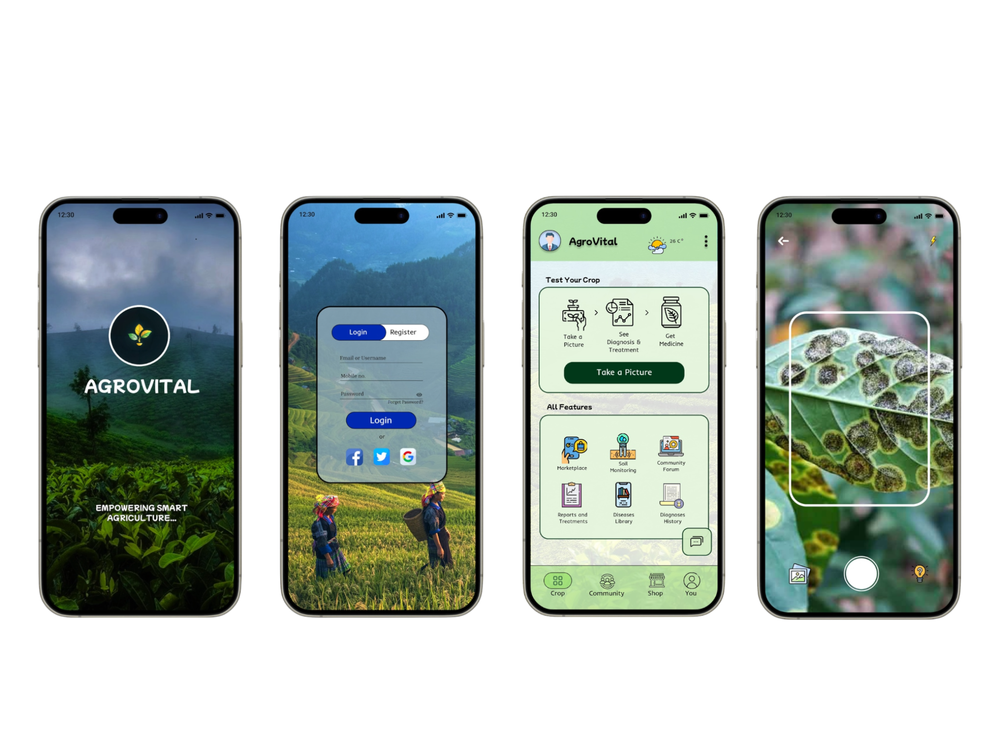
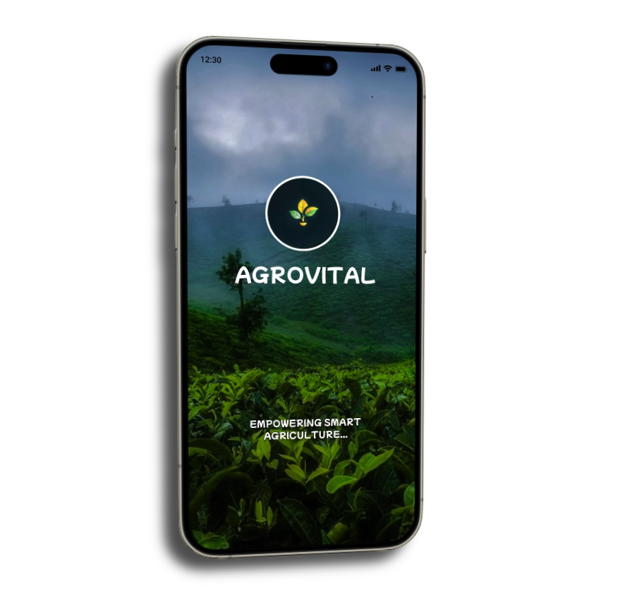

🌱
Crop Diagnosis
Identify crop diseases and get guidance for diagnosis and treatment.
Smart solutions for healthier crops through AI-powered diagnosis, soil monitoring, and practical support for modern farmers.
Download nowA single app experience for crop care, farmer support, and smarter decisions in agriculture.

AgroVital is an innovative Agri-tech platform designed to support farmers with real-time crop diagnostics, soil monitoring, and an agro-marketplace. Using AI and IoT technology, AgroVital provides personalized recommendations to help farmers improve crop health, optimize soil conditions, and boost productivity.
With features like crop diagnosis, soil monitoring, and a marketplace, AgroVital empowers farmers to make data-driven decisions, ensuring sustainable and profitable farming.

Identify crop diseases and get guidance for diagnosis and treatment.
Monitor agricultural conditions and support data-driven decisions.
Connect with useful products, services, and farming resources.
Bring AI and practical technology into everyday farming.
Team Leader
Member
Member
Member
Member
Member